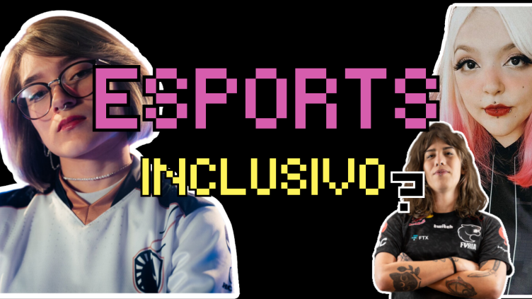
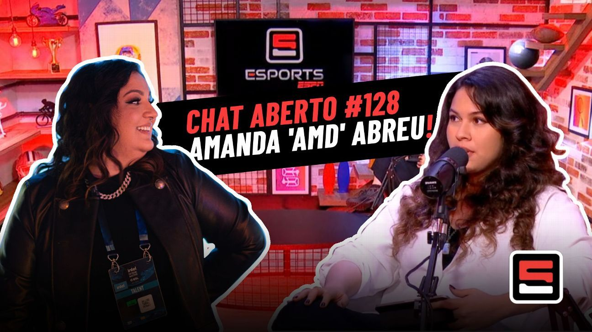

A IMPORTÂNCIA DO CENÁRIO INCLUSIVO DE ESPORTS

Um artigo para fazer refletir.
Autora: Flávia Lopes
Amanda 'AMD' Abreu fala sobre carreira, esports e CS:GO

Conheça um pouco sobre Amanda 'AMD' Abreu, uma das mulheres mais importantes no cenário inclusivo.
Fonte: ESPN Brasil
Gaming Queens: Cinco players brasileiras jogam pra conquistar o mundo
 Elas formam um dos times mais fortes do mundo no CS:GO. Juntas, e defendendo a camisa da FURIA, se preparam pra chegar ao topo da cena de um dos principais games da cena de esports.
Fonte: Redbull TV
Elas formam um dos times mais fortes do mundo no CS:GO. Juntas, e defendendo a camisa da FURIA, se preparam pra chegar ao topo da cena de um dos principais games da cena de esports.
Fonte: Redbull TV